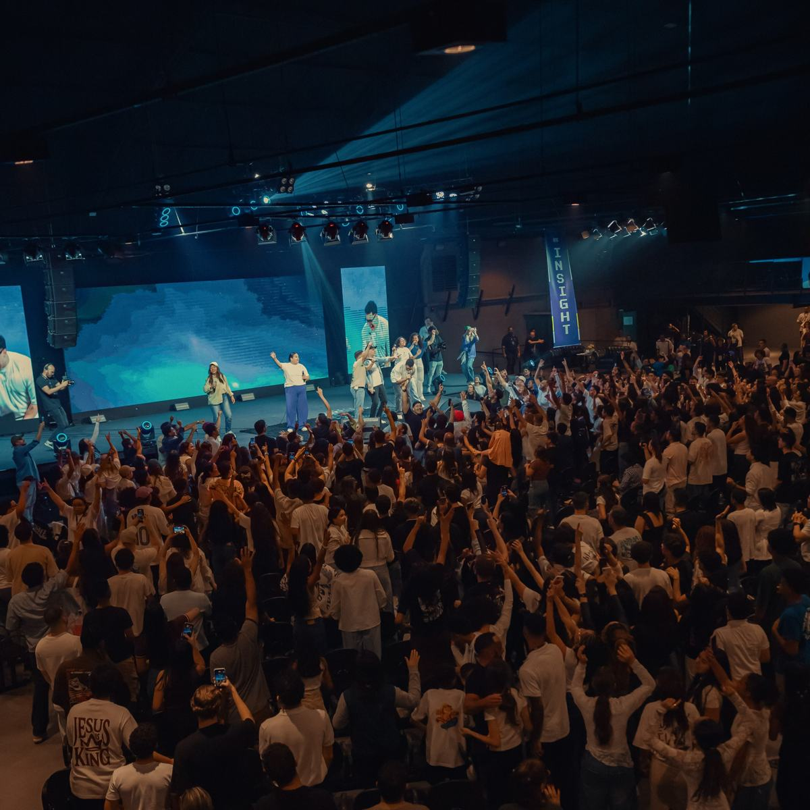
SedeCidade IMAFE, uma igreja que prioriza a exposição bíblica
Uma igreja em expansão: sede na Vila Maria Alta e campi na Zona Leste, na Zona Sul e em Mairiporã.
Nossos campi
Uma Cidade,
quatro casas.
Escolha o campus mais perto de você e veja horários, endereço e quem vai te receber.
IMAFE · Igreja Missão Apostólica da Fé
“Vinde após mim, e eu vos farei pescadores de homens.”Mateus 4:19
Nascida em outubro de 2007 na Vila Maria Alta, Zona Norte de São Paulo, presidida pelo Bispo Adson Belo e pela Pastora Alba Belo, a Cidade IMAFE tem levado a Palavra de Deus de forma genuína, com verdade e fidelidade, e “pescado” muitas almas para Cristo no Brasil e no mundo, cumprindo o ide.
0anos completos em outubro de 2026
0casas: sede, Zona Leste, Zona Sul e Mairiporã
0almas na Conferência Insight 2026
0pessoas na @cidadeimafeoficial
A Palavra · 2 Coríntios 12:9
Nem todo “não” de Deus é rejeição; às vezes, é tratamento e propósito.
Paulo pediu que o espinho fosse retirado, mas Deus permitiu que ele permanecesse. O que Paulo queria ver removido, Deus usaria para ensiná-lo a depender da graça.
O “não” de Deus também é resposta, e a graça dEle continua sendo suficiente.Campus Zona Leste
Louvor · @imafemusic
Uma só voz, exaltando Aquele que é digno de toda adoração.
IMAFE Music nas plataformas
01 / 16
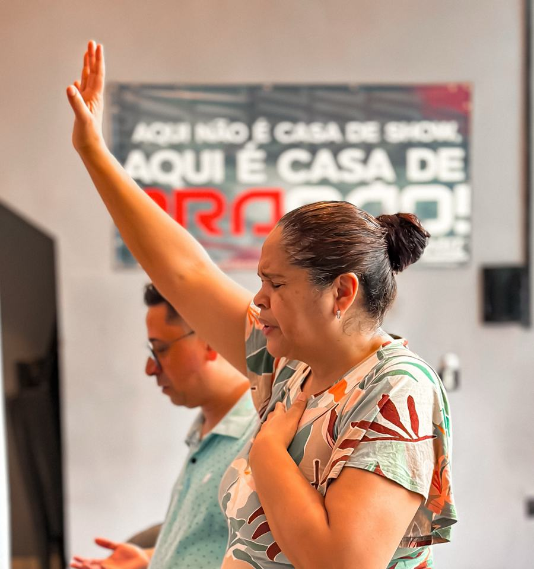
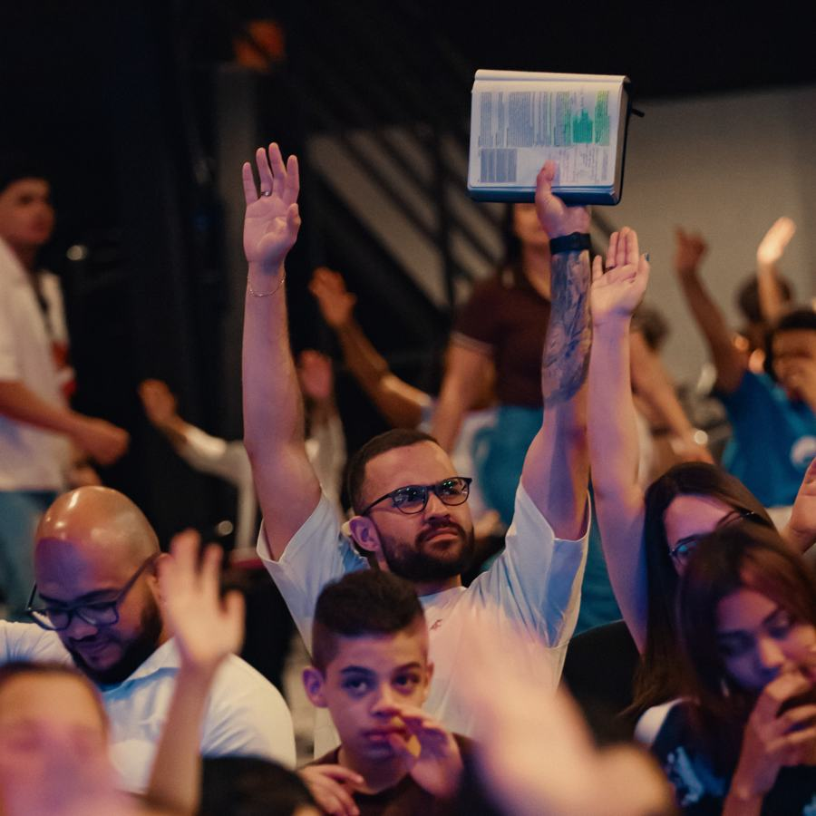
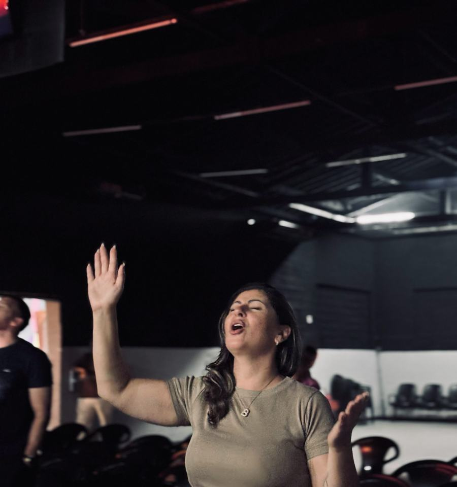
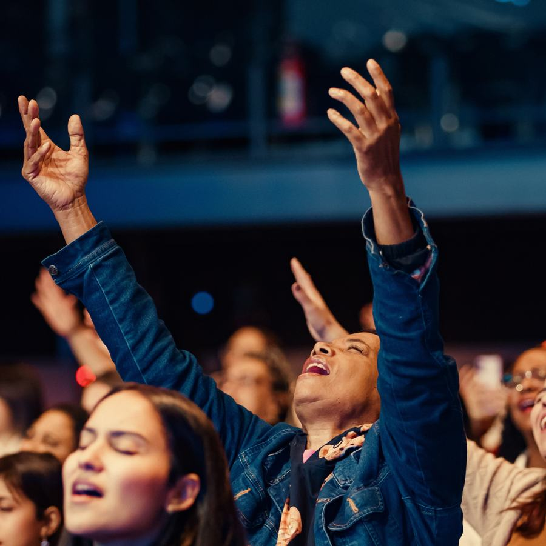
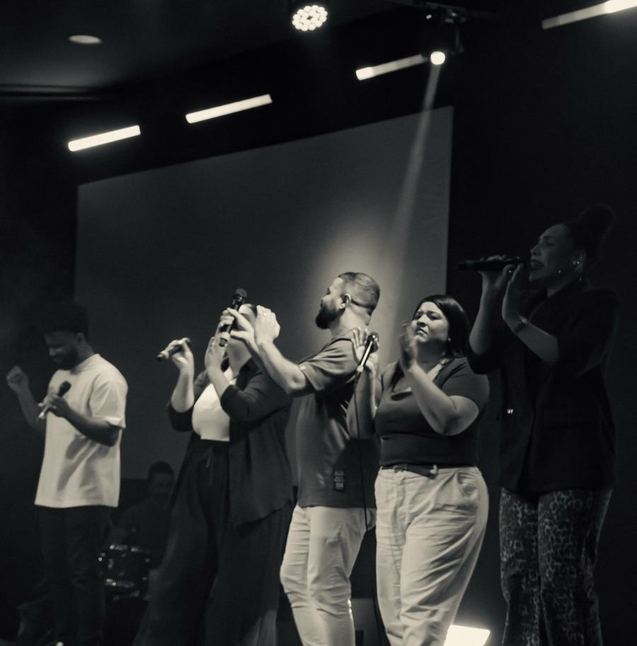
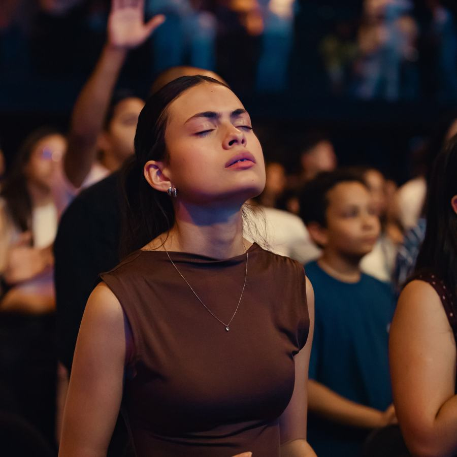
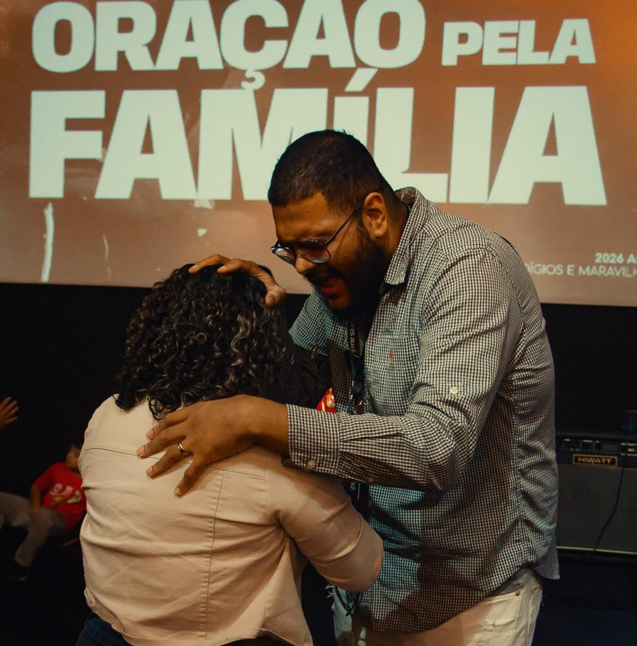
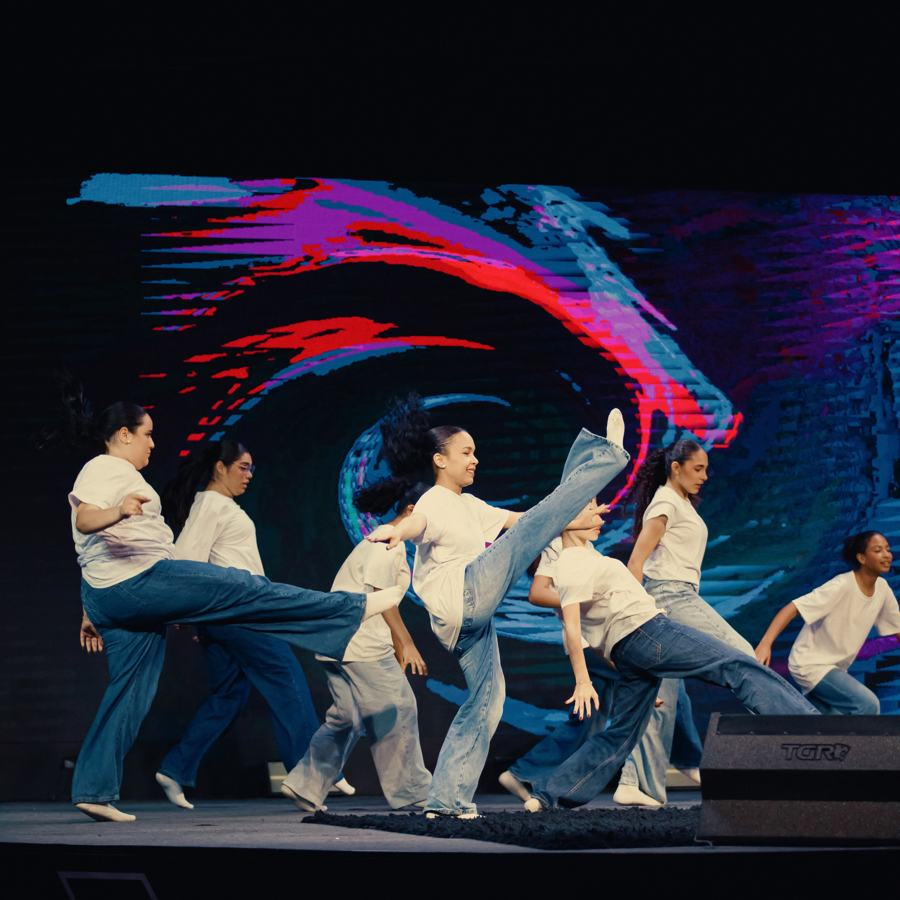
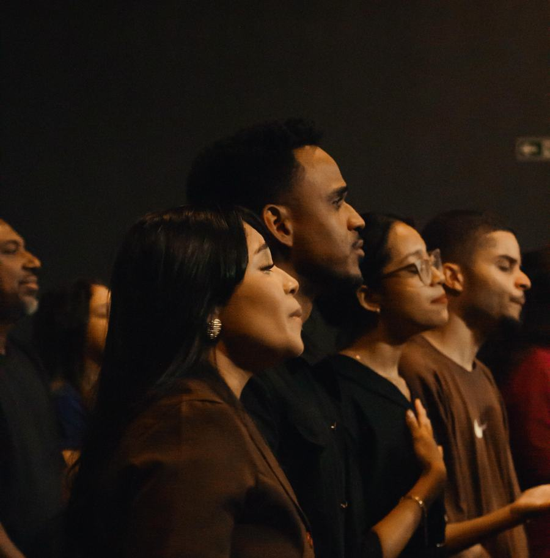
Ministérios
Tem um lugar para você.
@imafemusic
IMAFE Music
O louvor da Cidade IMAFE, no altar e nas plataformas.
@jpaimafe · @gerai.imafe
JPA e GERAI
Jovens Pescadores de Almas e adolescentes. Sábado 18h30, encontros quinzenais.
@femme.imafe
FEMME
Ministério de mulheres, com a Pastora Sênior Alba Belo.
@imafe.kids
Cidade Kids
Crianças de 2 a 11 anos. Check-in no hall da Cidade Kids, chegue mais cedo.
@institutocidadeimafe
Instituto Cidade IMAFE
Atividades abertas a todas as pessoas, independentemente de religião.
- Ministério de CasaisPr. Sérgio e Pra. Joyce Cavalcante
- ATOS · Companhia de dançaSuelen Gomes e Larissa Sinoca
- USI · União Social IMAFETatiana Nascimento
- ITEPA Bible CollegeEstudo bíblico ↗
- Terça da ParasháSéries e estudos bíblicos · terça 20h na sede
Mensagens · YouTube Cidade IMAFE
Cultos transmitidos direto da sede.
Pedido de oração
Oração pela família.
Quinta, 20h, é dia de Culto de Oração na sede. Deixe seu pedido no Mural de orações da Cidade IMAFE.
Ceia do Senhor
Fazei isto em memória de mim.
1 Coríntios 11:24 · o culto mais importante do mês
Sede
1º domingo · 10h e 18h
…
Campus Zona Leste
2º domingo · 10h
…
Agenda
Aumente as expectativas e aqueça o coração.
Palavra Profética 2027 · Entrada franca
A maior Palavra Profética da história.
06 de dezembro de 2026 · das 17h às 22h
Ginásio da Portuguesa · Rua Comendador Nestor Pereira, 33 · Canindé · para 10 mil pessoas
Uma noite de adoração e de receber a palavra profética que conduzirá o nosso ano de 2027 com o Bispo Adson Belo.
00dias
00horas
00min
00seg
24out
Conferência Femme 2026
Thamires Garcia é presença confirmada. Um dia de cura, Palavra, adoração, comunhão e alegria. Convide uma amiga especial.
31out
Maratona de Matemática para o ENEM
Última aula: entendendo as questões, das mais fáceis às mais difíceis.
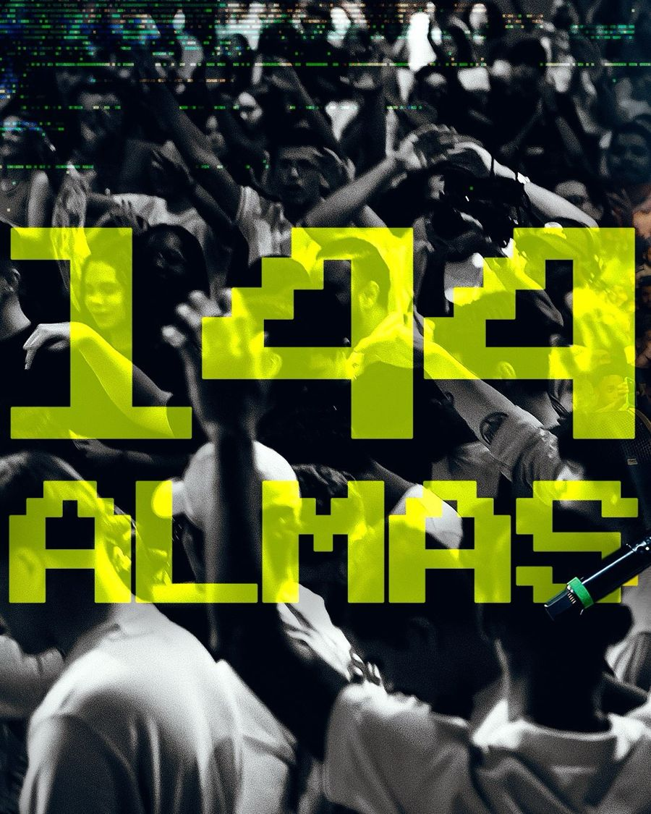
Conferência Insight 2026
Uma noite que marcou a nossa história. Uma geração que ama a Palavra de Deus.
Planeje sua visita
Esperamos por você e sua família.
Escolha o campus e o culto. A mensagem vai pronta para o WhatsApp da secretaria da Cidade IMAFE.
- Estacionamento
- Espaço Gourmet
- Cidade Kids
- Sala de Acolhimento e Fé
Gabinete pastoral, apresentação de criança, visita pastoral:
WhatsApp (11) 98702-7318 · secretariacidadeimafe@gmail.com